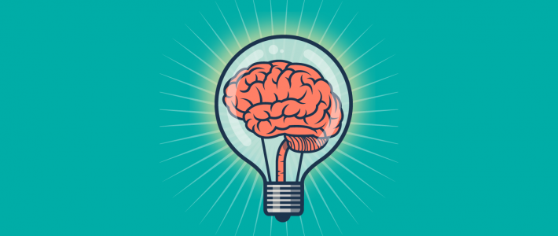
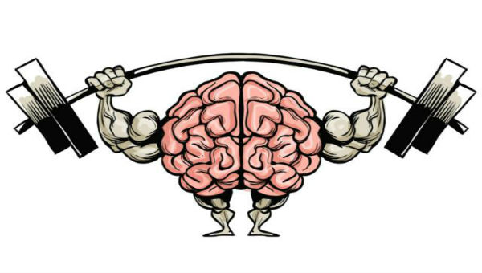
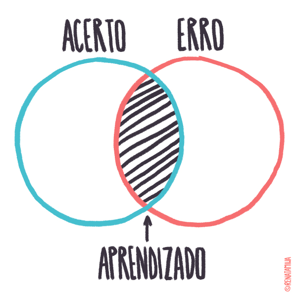

Crescimento
A mentalidade de crescimento é como uma crença, ou seja, é uma forma de acreditar que nosso cérebro não permanece fixo, mas sim aumenta as ligações assim fazendo a pratica de algo ser mais fácil, digamos que você eduque seu cérebro para ele aprender a aprender.
Errar pode ajudar-nos a aprender melhor, e não repetir nosso erros. Digamos que você está tentando inventar algo novo, mas erra 90 vezes antes de acertar, ou seja, você descobriu 90 vezes como não fazer esta invenção. Errar algumas vezes nos beneficia, mas repetir nossos erros muitas vezes pode nos prejudicar, e até acabar com nossos sonhos.
Incerteza, Escolher por exemplo entre, sair com os amigos ou ficar estudando em casa? Como isso pode nos ajudar a desenvolver mais o nosso cérebro? As incertezas nos ajudam a pensar e refletir qual das opções é melhor para nosso "Futuro Próximo", ajudam a a amadurecer nosso cérebro e pensar no que é bom e ruim, muitas das pessoas não refletem sobre qual das opções seria as mais certa para seu futuro e acabam escolhendo a opção que as beneficie no momento atual, não pensam nas consequências que isto pode ocasionar em sua vida, como sair para beber pode ocasionar muitos males no futuro.
Nos frustrarmos é uma coisa comum, muitas vezes causada por altas expectativas, colocar muitas coisas em cima de algo e na verdade não ser bem oque estávamos esperando. Mas como podemos superar isto? Não podemos só pensar nos pontos negativos das coisas, muitas vezes esquecemos dos pontos positivos das coisas, por exemplo, quando compramos um produto achando que seria algo espetacular mas na verdade nem era isso tudo assim, acabamos nos esquecendo que este produto que compramos era bom sim, mas não algo como nossas expectativas esperavam.
Desde o começo da raça humana, nós testamos criar e cumprir metas, como caçar e conseguir voltar com comida para todo o bando, ou como nos tempo atuais, fazer uma meta com o objetivo de se tornar um jogador profissional de algum esporte, ou até conseguir um emprego de grande escalão. Para cumprir estas metas temos que ter foco e persistência, e nunca, nunca mesmo desistir de nossos sonhos, todos podem conseguir oque querem, mas nem todos correm atras do que podem.